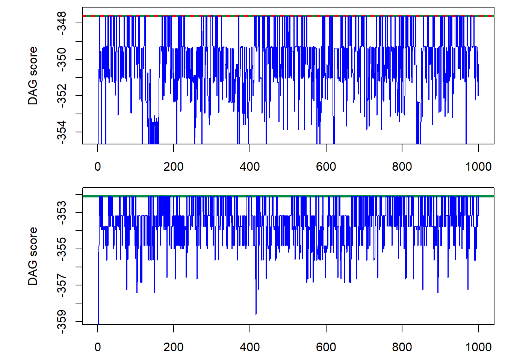
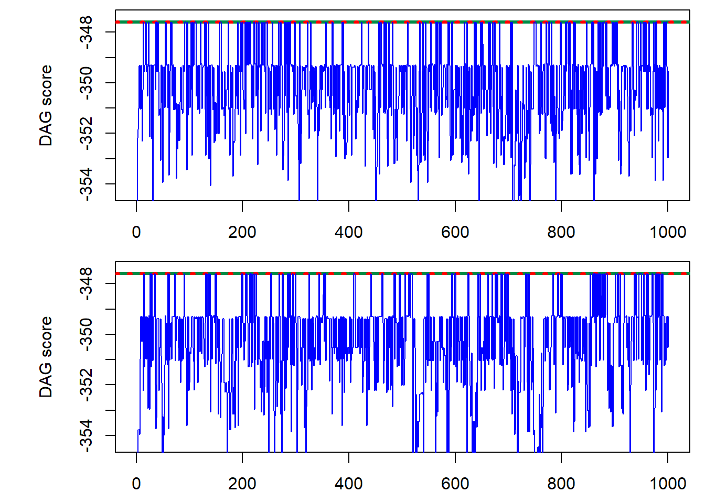
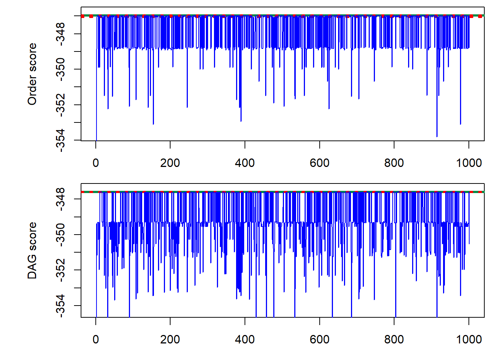
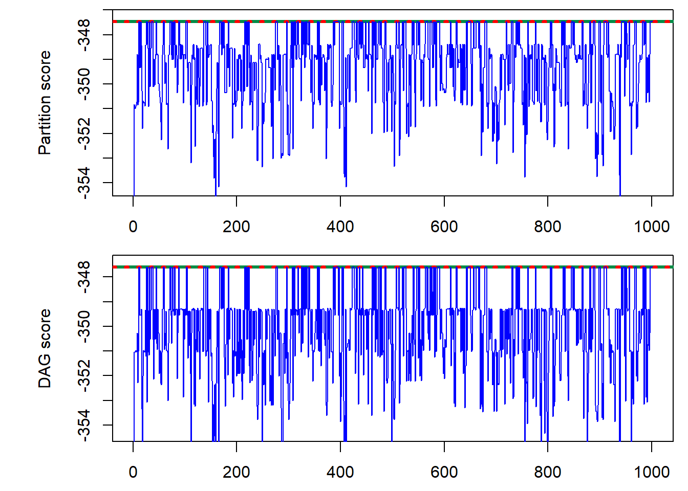
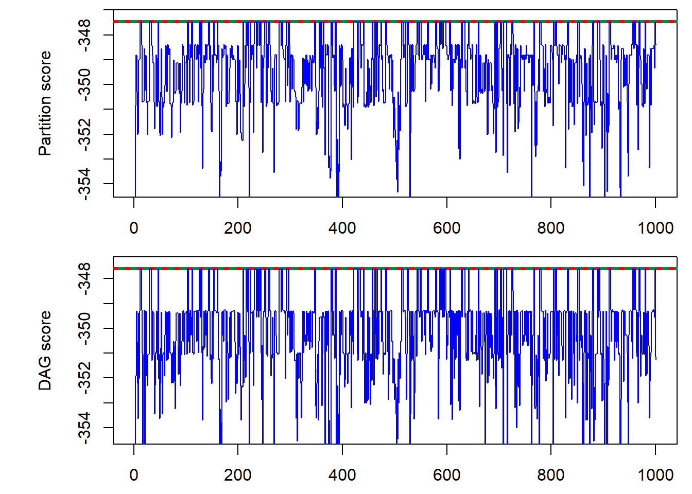

Last updated: 2021-04-01
Checks: 6 1
Knit directory: PartitionMCMCDAG/
This reproducible R Markdown analysis was created with workflowr (version 1.6.2). The Checks tab describes the reproducibility checks that were applied when the results were created. The Past versions tab lists the development history.
The R Markdown is untracked by Git. To know which version of the R Markdown file created these results, you’ll want to first commit it to the Git repo. If you’re still working on the analysis, you can ignore this warning. When you’re finished, you can run wflow_publish to commit the R Markdown file and build the HTML.
Great job! The global environment was empty. Objects defined in the global environment can affect the analysis in your R Markdown file in unknown ways. For reproduciblity it’s best to always run the code in an empty environment.
The command set.seed(20180606) was run prior to running the code in the R Markdown file. Setting a seed ensures that any results that rely on randomness, e.g. subsampling or permutations, are reproducible.
Great job! Recording the operating system, R version, and package versions is critical for reproducibility.
Nice! There were no cached chunks for this analysis, so you can be confident that you successfully produced the results during this run.
Great job! Using relative paths to the files within your workflowr project makes it easier to run your code on other machines.
Great! You are using Git for version control. Tracking code development and connecting the code version to the results is critical for reproducibility.
The results in this page were generated with repository version d52e4ca. See the Past versions tab to see a history of the changes made to the R Markdown and HTML files.
Note that you need to be careful to ensure that all relevant files for the analysis have been committed to Git prior to generating the results (you can use wflow_publish or wflow_git_commit). workflowr only checks the R Markdown file, but you know if there are other scripts or data files that it depends on. Below is the status of the Git repository when the results were generated:
Ignored files:
Ignored: analysis/.Rhistory
Ignored: analysis/figure/
Untracked files:
Untracked: analysis/Runningasimplesimulation.Rmd
Untracked: analysis/runningasimpleexample.Rmd
Unstaged changes:
Modified: analysis/index.Rmd
Modified: analysis/simpleexample.Rmd
Modified: analysis/structureMCMC.Rmd
Note that any generated files, e.g. HTML, png, CSS, etc., are not included in this status report because it is ok for generated content to have uncommitted changes.
There are no past versions. Publish this analysis with wflow_publish() to start tracking its development.
For this example we simulate data from a DAG with n = 5 nodes and score with the BGe score. This code creates the graphs in the main paper.
n <- 5First we load the R files needed to run the MCMC codes
path="C:/Shengtong/Research/PartitionMCMCDAG/"
source(paste(path, "partitionMCMCcode/edgerevandstructure/structurefns.R", sep=""))
source(paste(path, "partitionMCMCcode/edgerevandstructure/structureMCMC.R", sep=""))
source(paste(path, "partitionMCMCcode/edgerevandstructure/newedgerevfns.R", sep=""))
source(paste(path, "partitionMCMCcode/edgerevandstructure/newedgerevmove.R", sep=""))
source(paste(path, "partitionMCMCcode/orderandpartition/orderMCMC.R", sep=""))
source(paste(path, "partitionMCMCcode/orderandpartition/orderfns.R", sep=""))
source(paste(path, "partitionMCMCcode/orderandpartition/partitionMCMC.R", sep=""))
source(paste(path, "partitionMCMCcode/orderandpartition/partitionmoves.R", sep=""))
source(paste(path, "partitionMCMCcode/orderandpartition/partitionfns.R", sep=""))
source(paste(path, "partitionMCMCcode/orderandpartition/samplefns.R", sep=""))
source(paste(path, "partitionMCMCcode/scoring/combinations.R", sep=""))
source(paste(path, "partitionMCMCcode/scoring/scorefns.R", sep=""))
source(paste(path, "partitionMCMCcode/scoring/scoretables.R", sep=""))
# load the BGe score
source(paste(path, "partitionMCMCcode/scoring/bgescorestable.R", sep=""))And then generate the data and load the score parameters
source(paste(path, "partitionMCMCcode/initialisation/data5nodes.R", sep=""))
source(paste(path, "partitionMCMCcode/initialisation/scoreparas.R", sep=""))We can also calculate the score of the DAG the data generated from
realDAGlogscore <- sum(DAGnodescore(incidence, n, c(1:n)))Then we build the score table of all parent sets
maxparents <- n - 1 # Maximum number of parents to allow
# Fill up a matrix with possible parents
parenttable <- listpossibleparents(maxparents, c(1:n))
tablelength <- nrow(parenttable[[1]]) # size of the table
# Now need to score them!
scoretable <- scorepossibleparents(parenttable, n)so we can also calculate the scores of all orders that DAG is compatible with
# calculate score of orders compatible with the DAG that the
# data is generated from
realorderlogscores <- rep(0, length(realorderpermys))
for (j in 1:length(realorderpermys)) {
realorderscores <- orderscore(n, c(1:n), parenttable, scoretable,
realorderpermys[[j]])
# log total score of all DAGs in the order
realorderlogscores[j] <- sum(realorderscores$totscores)
}and the partition it belongs to
realposy <- parttolist(n, realparty)
realpartitionscores <- partitionscore(n, c(1:n), parenttable, scoretable,
realpermy, realparty, realposy)
# log total score of all DAGs in the partition
realpartitionlogscore <- sum(realpartitionscores$totscores)We will also perform all the runs with the same seed
seednumber <- 101 # seed numberFor structure MCMC we run for 5000 iterations
iterations <- 50000 #number of iterations in the chain
stepsave <- iterations/1000 #how often to save the resultand first we allow standard edge reversal by setting
revallowed <- 1 # allow standard edge reversalsand exclude the new edge reversal move by giving the moveprobs vector a single element
moveprobs <- c(1) # having length 1 disallows the new edge reversal moveStarting with a DAG with no edges
startDAG <- matrix(numeric(n * n), nrow = n) # starting DAG is empty saywe can then run structure MCMC as follows
set.seed(seednumber) # set the seed
example <- structureMCMC(n, startDAG, iterations, stepsave, maxparents,
parenttable, scoretable, revallowed, moveprobs) # run the MCMC codeThe result of the function is a list containing the sampled DAGs (stored as incidence matrices) as the first element and their scores as the second. We also perform a run with the standard edge reversal moves excluded
revallowed <- 0 # disable standard edge reversals
set.seed(seednumber)
example2 <- structureMCMC(n, startDAG, iterations, stepsave, maxparents,
parenttable, scoretable, revallowed, moveprobs)We can extract the scores and plot them as the runs progress
par(mfrow = c(2, 1)) # plotting parameters
par(mar = c(2.5, 5.75, 0.5, 0.75))
nparts <- length(example[[2]])
maxDAGscore <- max(unlist(example[[2]]))
plot(1:nparts, example[[2]], type = "l", ylab = "DAG score", xlab = "",
main = "", col = "blue", ylim = c(maxDAGscore - 6.8, maxDAGscore +
0.2))
abline(h = maxDAGscore, col = "springgreen4", lwd = 3)
abline(h = realDAGlogscore, col = "red", lty = 3, lwd = 3)
lines(1:nparts, example[[2]], type = "l", col = "blue")
maxDAGscore2 <- max(unlist(example2[[2]]))
plot(1:nparts, example2[[2]], type = "l", ylab = "DAG score", xlab = "",
main = "", col = "blue", ylim = c(maxDAGscore2 - 6.8, maxDAGscore2 +
0.2))
abline(h = maxDAGscore2, col = "springgreen4", lwd = 3)
abline(h = realDAGlogscore, col = "red", lty = 3, lwd = 3)
lines(1:nparts, example2[[2]], type = "l", col = "blue")
We can include the new edge reversal move, by simply making the vector moveprobs have two elements, with the second corresponding to the probability of picking the new edge reversal move.
moveprobs <- c(0.93, 0.07) # having length 1 disallows the new edge reversal moveNow we run the chains for 40000 iterations, once with the standard edge reversal and once without
iterations <- 40000 #number of iterations in the chain
stepsave <- iterations/1000 #how often to save the result
revallowed <- 1 # allow standard edge reversals
set.seed(seednumber) # set the seed
example <- structureMCMC(n, startDAG, iterations, stepsave, maxparents,
parenttable, scoretable, revallowed, moveprobs) # run the MCMC code
revallowed <- 0 # dont allow standard edge reversals
set.seed(seednumber)
example2 <- structureMCMC(n, startDAG, iterations, stepsave, maxparents,
parenttable, scoretable, revallowed, moveprobs)The trace plot is now
par(mfrow = c(2, 1)) # plotting parameters
par(mar = c(2.5, 5.75, 0.5, 0.75))
nparts <- length(example[[2]])
maxDAGscore <- max(unlist(example[[2]]))
plot(1:nparts, example[[2]], type = "l", ylab = "DAG score", xlab = "",
main = "", col = "blue", ylim = c(maxDAGscore - 6.8, maxDAGscore +
0.2))
abline(h = maxDAGscore, col = "springgreen4", lwd = 3)
abline(h = realDAGlogscore, col = "red", lty = 3, lwd = 3)
lines(1:nparts, example[[2]], type = "l", col = "blue")
maxDAGscore2 <- max(unlist(example2[[2]]))
plot(1:nparts, example2[[2]], type = "l", ylab = "DAG score", xlab = "",
main = "", col = "blue", ylim = c(maxDAGscore2 - 6.8, maxDAGscore2 +
0.2))
abline(h = maxDAGscore2, col = "springgreen4", lwd = 3)
abline(h = realDAGlogscore, col = "red", lty = 3, lwd = 3)
lines(1:nparts, example2[[2]], type = "l", col = "blue")
For Order MCMC we now have three elements in the moveprobs vector. The first is the probability of swapping any two elements in the order, the second the probability of only swapping adjacent nodes and the last the probability to stay still (to enforce aperiodicity of the chain)
prob1 <- 99
if (n > 3) {
prob1 <- round(6 * 99 * n/(n^2 + 10 * n - 24))
}
prob1 <- prob1/100
moveprobs <- c(prob1, 0.99 - prob1, 0.01)
moveprobs <- moveprobs/sum(moveprobs) # normalisation
moveprobs[1] 0.58 0.41 0.01We also need to choose a starting order, for example the identity permutation
startorder <- c(1:n) # starting orderand then we can run the MCMC code for 20000 iterations
iterations <- 20000 #number of iterations in the chain
stepsave <- iterations/1000 #how often to save the result
set.seed(seednumber) # set the seed
example <- orderMCMC(n, startorder, iterations, stepsave, parenttable,
scoretable, moveprobs)The output now contains four components, a sampled DAG and its score along with the score of the entire order and the sampled order itself (stored as a permutation vector). We can plot the outcome for both the orders and for the DAGs
par(mfrow = c(2, 1)) # plotting parameters
par(mar = c(2.5, 5.75, 0.5, 0.75))
nparts <- length(example[[2]])
maxorderscore <- max(unlist(example[[3]]))
maxDAGscore <- max(unlist(example[[2]]))
plot(1:nparts, example[[3]], type = "l", ylab = "Order score",
xlab = "", main = "", col = "blue", ylim = c(maxorderscore -
6.8, maxorderscore + 0.2))
abline(h = maxorderscore, col = "springgreen4", lwd = 3)
abline(h = realorderlogscores, col = "red", lty = 3, lwd = 3)
lines(1:nparts, example[[3]], type = "l", col = "blue")
plot(1:nparts, example[[2]], type = "l", ylab = "DAG score", xlab = "",
main = "", col = "blue", ylim = c(maxDAGscore - 6.8, maxDAGscore +
0.2))
abline(h = maxDAGscore, col = "springgreen4", lwd = 3)
abline(h = realDAGlogscore, col = "red", lty = 3, lwd = 3)
lines(1:nparts, example[[2]], type = "l", col = "blue")
For Partiton MCMC we have five elements in the moveprobs vector. The first is the probability of swapping two nodes from different partititon elements, while the second for swapping nodes from adjacent partition elements. The third corresponds to joining and splitting partition elements with the fourth being the probability of moving a node from one element to another. The last is again the probability of not moving
prob1start <- 40/100
prob1 <- prob1start * 100
if (n > 3) {
prob1 <- round(6 * prob1 * n/(n^2 + 10 * n - 24))
}
prob1 <- prob1/100
prob2start <- 99/100 - prob1start
prob2 <- prob2start * 100
if (n > 3) {
prob2 <- round(6 * prob2 * n/(n^2 + 10 * n - 24))
}
prob2 <- prob2/100
moveprobs <- c(prob1, prob1start - prob1, prob2start - prob2, prob2,
0.01)
moveprobs <- moveprobs/sum(moveprobs) # normalisation
moveprobs[1] 0.24 0.16 0.24 0.35 0.01For the starting partition we can choose the DAG with no edges
startpermutation <- c(1:n) # pick a starting permutation
startpartition <- c(n) # and a starting partition - c(n) gives the empty DAGand then run the MCMC code for 10000 iterations
iterations <- 10000 #number of iterations in the chain
stepsave <- iterations/1000 #how often to save the result
set.seed(seednumber) # set the seed
example <- partitionMCMC(n, startpermutation, startpartition, iterations,
stepsave, parenttable, scoretable, moveprobs)The output now contains a five components: a sampled DAG and its score, the score of the entire partition and the sampled permutation and partition. The trace plot is
par(mfrow = c(2, 1)) # plotting parameters
par(mar = c(2.5, 5.75, 0.5, 0.75))
nparts <- length(example[[2]])
maxpartitionscore <- max(unlist(example[[3]]))
maxDAGscore <- max(unlist(example[[2]]))
plot(1:nparts, example[[3]], type = "l", ylab = "Partition score",
xlab = "", main = "", col = "blue", ylim = c(maxpartitionscore -
6.8, maxpartitionscore + 0.2))
abline(h = maxpartitionscore, col = "springgreen4", lwd = 3)
abline(h = realpartitionlogscore, col = "red", lty = 3, lwd = 3)
lines(1:nparts, example[[3]], type = "l", col = "blue")
plot(1:nparts, example[[2]], type = "l", ylab = "DAG score", xlab = "",
main = "", col = "blue", ylim = c(maxDAGscore - 6.8, maxDAGscore +
0.2))
abline(h = maxDAGscore, col = "springgreen4", lwd = 3)
abline(h = realDAGlogscore, col = "red", lty = 3, lwd = 3)
lines(1:nparts, example[[2]], type = "l", col = "blue")
Finally we can include the new edge reversal move on an underlying Partition MCMC chain by including a sixth element in the moveprobs vector, corresponding to the probability of picking the edge reversal move
prob1start <- 37/100
prob1 <- prob1start * 100
if (n > 3) {
prob1 <- round(6 * prob1 * n/(n^2 + 10 * n - 24))
}
prob1 <- prob1/100
prob2start <- 92/100 - prob1start
prob2 <- prob2start * 100
if (n > 3) {
prob2 <- round(6 * prob2 * n/(n^2 + 10 * n - 24))
}
prob2 <- prob2/100
moveprobs <- c(prob1, prob1start - prob1, prob2start - prob2, prob2,
0.01, 0.07)
moveprobs <- moveprobs/sum(moveprobs) # normalisation
moveprobs[1] 0.22 0.15 0.23 0.32 0.01 0.07This we run for 9000 iterations
iterations <- 9000 #number of iterations in the chain
stepsave <- iterations/1000 #how often to save the result
set.seed(seednumber) # set the seed
example <- partitionMCMC(n, startpermutation, startpartition, iterations,
stepsave, parenttable, scoretable, moveprobs)and plot the results
par(mfrow = c(2, 1)) # plotting parameters
par(mar = c(2.5, 5.75, 0.5, 0.75))
nparts <- length(example[[2]])
maxpartitionscore <- max(unlist(example[[3]]))
maxDAGscore <- max(unlist(example[[2]]))
plot(1:nparts, example[[3]], type = "l", ylab = "Partition score",
xlab = "", main = "", col = "blue", ylim = c(maxpartitionscore -
6.8, maxpartitionscore + 0.2))
abline(h = maxpartitionscore, col = "springgreen4", lwd = 3)
abline(h = realpartitionlogscore, col = "red", lty = 3, lwd = 3)
lines(1:nparts, example[[3]], type = "l", col = "blue")
plot(1:nparts, example[[2]], type = "l", ylab = "DAG score", xlab = "",
main = "", col = "blue", ylim = c(maxDAGscore - 6.8, maxDAGscore +
0.2))
abline(h = maxDAGscore, col = "springgreen4", lwd = 3)
abline(h = realDAGlogscore, col = "red", lty = 3, lwd = 3)
lines(1:nparts, example[[2]], type = "l", col = "blue")
sessionInfo()R version 3.6.0 (2019-04-26)
Platform: x86_64-w64-mingw32/x64 (64-bit)
Running under: Windows 10 x64 (build 18363)
Matrix products: default
locale:
[1] LC_COLLATE=English_United States.1252
[2] LC_CTYPE=English_United States.1252
[3] LC_MONETARY=English_United States.1252
[4] LC_NUMERIC=C
[5] LC_TIME=English_United States.1252
attached base packages:
[1] stats graphics grDevices utils datasets methods base
loaded via a namespace (and not attached):
[1] workflowr_1.6.2 Rcpp_1.0.1 rprojroot_1.3-2 digest_0.6.19
[5] later_0.8.0 R6_2.4.1 backports_1.1.4 git2r_0.26.1
[9] magrittr_1.5 evaluate_0.13 stringi_1.4.3 fs_1.3.1
[13] promises_1.0.1 rmarkdown_1.13 tools_3.6.0 stringr_1.4.0
[17] glue_1.4.1 httpuv_1.5.1 xfun_0.20 yaml_2.2.0
[21] compiler_3.6.0 htmltools_0.3.6 knitr_1.23